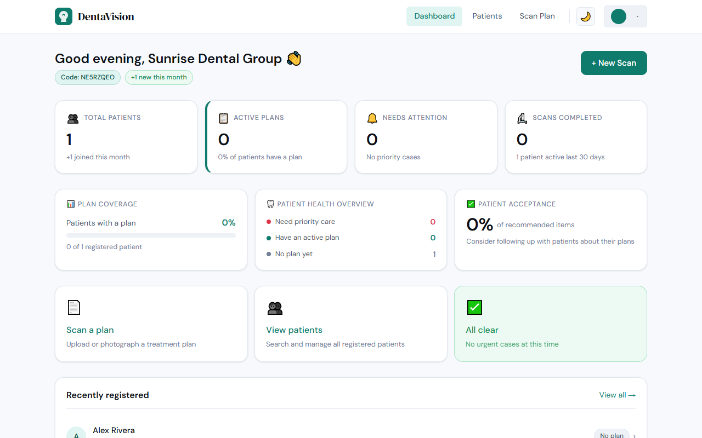

I build LLM evaluation tooling — and fine-tune the small models that do the evaluating.
I'm Landon Armstrong, based in Issaquah, WA. M.S. in Computer Science from Saint Martin's University (Dean's List, 2019–2024). My work is ML infrastructure: harnesses that measure whether a model is getting worse, the training code behind the models doing the measuring, and the cloud plumbing that carries both. Two of those models are published on Hugging Face — one of them beats a public reward model 2.4× its size on the distribution it was built for.
I build full-stack products too, and still do: a dental SaaS running in production with Stripe billing and dual-role auth, a clinical-document API whose AWS infrastructure is written in Terraform, and a horror game that shipped on Steam. I trained in CS through a B.S., an M.S., and a graduate teaching assistantship, and I'm building in public while I work outside the field. Every number on this page comes out of a results file I can show you — including the ones that didn't go my way.

EvalForge
An open-source platform for automating LLM evaluation end to end. Define a prompt suite once; it runs concurrently against Claude, OpenAI, Gemini or a local Ollama model, scores every output with pluggable judges, collects blind human preference votes, and diffs any two runs so a regression surfaces before a human notices it. Two of the judges aren't API calls — they're models I fine-tuned and published to Hugging Face.
The more useful half of that work is where they fail. The hallucination detector scores F1 0.99 in-distribution and 0.51 on RAGTruth, a held-out set of hallucinations from real RAG systems. Choosing the checkpoint on validation F1 alone would have shipped the worst of the three at generalizing, which is the whole reason RAGTruth was quarantined from training to begin with.
| Judge | Agreement | Cost / 1K | p50 latency |
|---|---|---|---|
| local DeBERTa (mine) | 47.5% | $0.00 | 27 ms |
| claude-sonnet-5 | 85.0% | $4.06 | 1,466 ms |
| gpt-4o | 82.5% | $2.03 | 1,311 ms |
| gemini-2.5-flash-lite | 78.5% | $0.08 | 1,182 ms |
Generated from the benchmark's own results file, not typed by hand.
Free and far faster, and still not a substitute for a paid judge on unfamiliar data — its honest job today is a cheap first-pass filter. The second model is a 184M-parameter Bradley-Terry preference reward model, trained with a hand-written PyTorch loop. I ran a public reward model 2.4× its size through the same harness on the same split, because a number is only worth what you compare it against.
| Model | Params | N | Pairwise acc. |
|---|---|---|---|
| Chance floor | — | — | 0.5000 |
| OpenAssistant reward-model-deberta-v3-large-v2 | 435M | 1,987 | 0.6009 |
| mine — in-distribution | 184M | 1,987 | 0.7026 |
| mine — 15 blind human votes (out-of-distribution) | 184M | 15 | 0.4000 |
Read that honestly: my model is scored in-distribution and the public baseline is not — it was trained on a different preference mixture entirely. The comparison says 0.7026 is a real number rather than a collapsed one (a failed learning-rate run sat at 0.5098), not that mine is the better reward model. The last row is the inverse: on fifteen genuine blind votes of my own it drops to chance. Neither model generalizes for free.
A later self-audit caught the kind of bug that never throws: the reward judge was serving at a 1024-token budget against a checkpoint trained at 512, so 39% of held-out pairs were being scored off-regime. The sequence length is now derived from the checkpoint's own config instead of restated in three files. The published numbers survived the re-measurement — the defect was in serving, not in reporting — but an unmeasured difference is not a small one. CI now runs a fixed suite against a pinned local model on every pull request that touches the API, and fails the build if scores collapse: the platform gates itself with itself.
Selected projects
Cloud / healthcare
MedInsight API
A clinical-document API: upload a note, get back a summary, extracted diagnoses, or a risk assessment from a LangGraph ReAct agent with four tools over the document store. Document text is encrypted at rest with Fernet, every document and analysis request is written to an append-only audit log (DynamoDB when configured for AWS, JSONL locally). Infrastructure is four Terraform modules — networking, security, storage, ECS Fargate — and the deploy pipeline authenticates over OIDC so no long-lived keys sit in the repo. To be exact about what that means: I wrote the infrastructure and the pipeline, but I have never run them against a live AWS account. The CD workflow has no successful run, and I exercised the S3, DynamoDB and KMS paths against LocalStack rather than pay for a Fargate cluster to sit idle behind a portfolio project. 40 pytest tests cover auth, the document service, encryption round-trips, and the audit trail.
AI platform
AgentForge
Build an agent, point it at an OpenAI or Anthropic model, give it tools, and talk to it. Tokens stream over SSE, and a sidebar traces every tool call with its input and output — that trace is the part I actually use, because a wrong answer is usually a wrong tool call, and without it you are guessing. A single prompt can also be fanned out across several models to compare latency side by side. Search is DuckDuckGo's keyless Instant Answer API, which returns nothing useful for narrow queries; the tool says so rather than inventing an answer.
Full-stack SaaS
DentaVision
A patient-facing layer for dental treatment plans, built out of my day job coordinating patient care. It deliberately does not compete with a practice's existing software: the coordinator scans, uploads, or types in the plan the practice already produced, Claude parses it into plain language, and the patient gets one simple view of what is recommended, what is urgent, and what they have already had done, on an interactive SVG tooth chart. Working from an upload rather than a practice-management integration is the product decision I would defend hardest — it means a clinic can adopt it without waiting on their software vendor. 20 Jest tests cover the auth and API layer, and a GitHub Actions pipeline gates every deploy — backend to Render, frontend to Vercel.

Architecture showcase
Shorts Factory
An autonomous short-form video pipeline that runs a weekly production window with nobody at the keyboard: a local LLM drafts the script, Edge TTS voices it, FFmpeg composites it, RealESRGAN upscales it, and it publishes itself to YouTube on a schedule. The parts I would actually defend in a review are the operational ones — a GPU lock so two render jobs can't fight over the same card, and a scheduler that runs shifts unattended and recovers on its own. It is where I learned what actually breaks when a pipeline has to run without anyone watching it.
Published on Steam
Echoed Nights
First-person Unity horror game, shipped on Steam with full ownership from concept through QA — my graduate capstone. NavMesh pathfinding and state-driven enemy AI that patrols, chases, and flees on distance thresholds. Enemy behavior was originally scoped as reinforcement learning and cut when the training budget proved unrealistic; the capstone report keeps that decision on the record rather than quietly reframing it.
Team lead
WAVets2Tech Portal
Led a team of four through the full SDLC building a veteran-to-tech career platform for Saint Martin's University — requirements through client delivery. An ASP.NET Core REST API over SQL Server with Entity Framework Core backs a React client for job listings, veteran profiles, and an employer directory.
Experience
Patient Care Coordinator
- Generate monthly KPI reports for executive leadership; identified scheduling inefficiencies that improved provider utilization across a 10+ provider practice.
- Manage patient recall workflows and front-end data systems — clinical experience that directly shaped DentaVision's product requirements.
Graduate Assistant / Teaching Assistant
- Conducted code reviews and 1:1 debugging sessions for 8+ students per semester across data structures, algorithms, and software engineering coursework.
- Designed project rubrics and evaluated student implementations of data structures, graph algorithms, and relational SQL.
Sales Service Expert
- Exceeded monthly enrollment targets through consultative selling; onboarded new members and maintained long-term retention relationships.
Skills
- Languages
- Python, JavaScript / TypeScript, C#, SQL, Java
- ML
- PyTorch (hand-written training loops), transformer fine-tuning, Bradley-Terry reward modeling, temperature calibration, eval-harness design, Hugging Face Hub
- LLM systems
- Claude & OpenAI APIs, LangGraph agents, tool calling, SSE streaming, RAG pipelines, ChromaDB, sentence transformers
- Cloud / infra
- Terraform, Docker, GitHub Actions CI/CD with OIDC, PostgreSQL, MongoDB Atlas, Vercel, Render. AWS (ECS Fargate, S3, DynamoDB, KMS) written in Terraform and exercised against LocalStack — not run against a live account
- Web
- React, Next.js, FastAPI, Node.js / Express, ASP.NET Core, Prisma, REST APIs
- Games
- Unity 3D, NavMesh, enemy AI state machines, game design
Education
M.S. Computer Science, Saint Martin's University — May 2024
B.S. Computer Science, Saint Martin's University — May 2023
Dean's List 2019–2024 · NCAA Track & Field 2019–2024 · Coursework in algorithms, databases, AI, cryptography, cloud technologies, and game development.
Contact
I'm looking for junior ML infrastructure, backend, or cloud roles — automating LLM evaluation is the problem I most want more of, and it's what I've spent the last year building. Happy to walk through any of the projects above in detail, including the parts that didn't work. The fastest way to reach me is email.